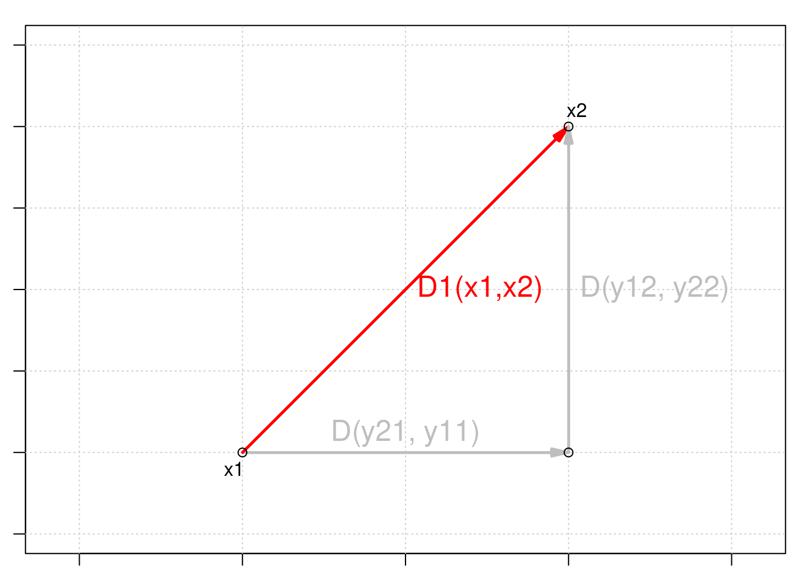
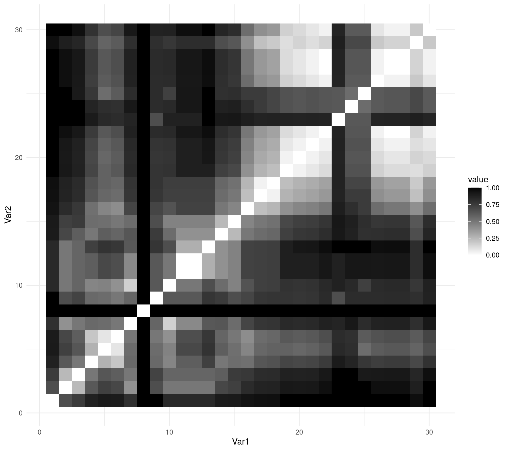

Chapter 9 Types of distance coefficients
There are three groups of distance coefficients: metrics, semimetrics, and nonmetrics .
9.1 Metric distances
The first group consists of metrics, and its coefficients satisfy the following properties:
minimum 0: if species \(a\) is equal to species \(b\), then \(D(a,b)=0\); ✅
positiveness: if \(a \neq b\), then \(D(a,b) > 0\); ✅
symmetry: \(D(a,b) = D(b,a)\); ✅
triangle inequality: \(D(a,b) + D(b,c) \geq D(a,c)\). The sum of two sides of a triangle drawn in the Euclidean space is equal or greater than the third side. ✅
We can spot all these properties below:
as.matrix(dist(spe))[1:6, 1:6]## 1 2 3 4 5 6
## 1 0.000000 5.385165 7.416198 7.874008 10.816654 7.348469
## 2 5.385165 0.000000 2.449490 4.123106 10.677078 4.582576
## 3 7.416198 2.449490 0.000000 3.000000 10.862780 4.123106
## 4 7.874008 4.123106 3.000000 0.000000 9.219544 2.828427
## 5 10.816654 10.677078 10.862780 9.219544 0.000000 8.185353
## 6 7.348469 4.582576 4.123106 2.828427 8.185353 0.0000009.1.1 Euclidean distances
The most common metric distance measure is the Euclidean distance.
Euclidean distance is a measure of the distance between two points in Euclidean space. In two dimensions, the Euclidean distance between two points (x1, y1) and (x2, y2) can be calculated using the Pythagorean theorem:
\[D_{1} (x_1,x_2) = \sqrt{\sum_{j=1}^p(y_{1j} - y_{2j})^2}\]

Euclidean distance is a commonly used measure in multivariate analyses because it provides a straightforward and intuitive way to measure the distance or similarity between observations in a multidimensional space.
Using stats::dist(), we can compute it with:
spe.D.Euclid <- dist(x = spe, method = "euclidean")And, we can test whether a distance is Euclidean using:
is.euclid(spe.D.Euclid)## [1] TRUE9.1.2 Challenge #1
Your turn! Using the dist() function, compute the Euclidean distance matrix \(D_{hmm}\) for the species abundances by site matrix \(Y_{hmm}\) below:
| Sites | \(y_1\) | \(y_2\) | \(y_3\) |
|---|---|---|---|
| \(s_1\) | 0 | 4 | 8 |
| \(s_2\) | 0 | 1 | 1 |
| \(s_3\) | 1 | 0 | 0 |
Y.hmm <- data.frame(y1 = c(0, 0, 1), y2 = c(4, 1, 0), y3 = c(8,
1, 0))After this, look into the numbers, think critically about them!
Solution:
You should have something similar to this:
Y.hmm.DistEu <- dist(x = Y.hmm, method = "euclidean")
as.matrix(Y.hmm.DistEu)## 1 2 3
## 1 0.000000 7.615773 9.000000
## 2 7.615773 0.000000 1.732051
## 3 9.000000 1.732051 0.000000Now, look into the composition and the distances between sites \(s_2\) and \(s_3\) and between \(s_1\) and \(s_2\). What is going on?
The Euclidean distance between sites \(s_2\) and \(s_3\), which have no species in common, is smaller than the distance between \(s_1\) and \(s_2\), which share species \(y_2\) and \(y_3\) (!).
From an ecological perspective, this is a problematic assessment of the relationship among sites.
This issue is known as the double-zero problem, i.e. double zeroes are treated in the same way as double presences, so that the double zeros shrink the distance between two sites.
Euclidean distances ( \(D_1\) ) should thus not be used to compare sites based on species abundances.
9.1.3 Chord distances
Orlóci (1967) proposed the Chord distance to analyse community composition.
Chord distance, also known as angular distance or great-circle distance, is a measure of the distance between two points on a sphere, such as the Earth.
It consists of:
1. Normalizing the data, i.e. scaling site vectors to length 1 by dividing species abundances in a given sample by the square-rooted sum of square abundances in all samples as
\[y'_{Uj}=y_{Uj}/\sum^s_{j=1}{y^2_{Uj}}\]
2. Calculating the Euclidean distances on this normalized data:
\[D_{3} (x_1,x_2) = \sqrt{\sum_{j=1}^p(y'_{1j} - y'_{2j})^2}\]
We can use vegan::vegdist() for this one:
spe.D.Ch <- vegdist(spe, method = "chord")## Warning in vegdist(spe, method = "chord"): you have empty rows: their dissimilarities may be
## meaningless in method "chord"## Warning in vegdist(spe, method = "chord"): missing values in resultsas.matrix(spe.D.Ch)[1:3, 1:3]## 1 2 3
## 1 0.0000000 0.7653669 0.9235374
## 2 0.7653669 0.0000000 0.2309609
## 3 0.9235374 0.2309609 0.0000000When two sites share the same species in the same proportions of the number of individuals the value of \(D_3\) is \(0\), and when no species are shared, its value is \(\sqrt{2}\).
What happens if we compute Chord distances in the same site-by-species matrix \(Y_{hmm}\)?
Let us try the Chord distances in the same matrix we used for Challenge #1:
Y.hmm.DistCh <- vegdist(Y.hmm, method = "chord")as.matrix(Y.hmm.DistCh)## 1 2 3
## 1 0.0000000 0.3203645 1.414214
## 2 0.3203645 0.0000000 1.414214
## 3 1.4142136 1.4142136 0.000000Now, let us compare with what we obtained when we used Euclidean distances:
as.matrix(Y.hmm.DistEu)## 1 2 3
## 1 0.000000 7.615773 9.000000
## 2 7.615773 0.000000 1.732051
## 3 9.000000 1.732051 0.000000See again how our matrix looks:
Y.hmm## y1 y2 y3
## 1 0 4 8
## 2 0 1 1
## 3 1 0 0So, adding any number of double zeroes to a pair of sites does not change the value of \(D_3\). Hence, Chord distances can be used to compare sites described by species abundances!
9.1.4 Jaccard’s coefficient
Another popular association coefficient is the Jaccard similarity coefficient (1900).
The Jaccard similarity coefficient was originally proposed by the French mathematician Paul Jaccard in 1901, in the context of ecology. Jaccard was interested in comparing the species composition of different plant communities, and proposed the Jaccard index as a measure of similarity between two communities based on their species richness.
Jaccard’s similarity coefficient is only appropriate for binary data, and its distance coefficient is defined with the size of the intersection divided by the size of the union of the sample sets.
\[D_{7}(x_1,x_2) = 1 - \frac{\vert x_1 \cap x_2 \vert}{\vert x_1 \cup x_2 \vert} = 1 - \frac{\vert x_1 \cap x_2 \vert}{\vert x_1 \vert + \vert x_2 \vert - \vert x_1 \cap x_2 \vert} = 1-\frac{a}{a+b+c}\]
where,
- \(a\) is the number of species shared between \(x_1\) and \(x_2\) that are coded \(1\);
- \(b\) is the number of occurrences where \(x_1\) and \(x_2\) are known to be different;
- \(c\) is the number of common absences between \(x_1\) and \(x_2\), i.e. both \(0\).
For example, for sites \(x_1\) and \(x_2\):
| \(x_1,x_2\) | \(y_1\) | \(y_2\) | \(y_3\) | \(y_4\) | \(y_5\) |
|---|---|---|---|---|---|
| \(x_1\) | 0 | 1 | 0 | 1 | 0 |
| \(x_2\) | 0 | 1 | 1 | 1 | 1 |
So, we can calculate \(a\), \(b\), and \(c\): - \(a\) = 1 + 1 = 2
\(b\) = 1 + 1 = 2
\(c\) = 1
And, then our distance coefficient:
\[D_{7}(x_1,x_2) = 1-\frac{2}{2+2+1}= 0.6\]
In R, you can use use the vegan::vegdist() function to calculate the Jaccard’s coefficient:
spe.D.Jac <- vegdist(spe, method = "jaccard", binary = TRUE)## Warning in vegdist(spe, method = "jaccard", binary = TRUE): you have empty rows: their dissimilarities may be
## meaningless in method "jaccard"9.2 Semimetric distances
The second group consists of semimetrics, and they violate the triangle inequality property:
minimum 0: if species \(a\) is equal to species \(b\), then \(D(a,b)=0\); ✅
positiveness: if \(a \neq b\), then \(D(a,b) > 0\); ✅
symmetry: \(D(a,b) = D(b,a)\); ✅
triangle inequality: \({D(a,b) + D(b,c) \geq or < D(a,c)}\). The sum of two sides of a triangle drawn in the Euclidean space is not equal or greater than the third side. ❌
9.2.1 Sørensen’s coefficient
All parameters in Jaccard’s similarity coefficient have equal weights.
\[D_{7}(x_1,x_2)=1-\frac{a}{a+b+c}\]
However, you may want to consider that a presence of a species is more informative than its absence.
The distance corresponding to Sørensen’s similarity coefficient (1948) gives weight to double presences:
\[D_{13}(x_1,x_2)=1-\frac{2a}{2a+b+c}=\frac{b+c}{2a+b+c}\]
where,
- \(a\) is the number of species shared between \(x_1\) and \(x_2\) that are coded \(1\);
- \(b\) is the number of occurrences where \(x_1\) and \(x_2\) are known to be different;
- \(c\) is the number of common absences between \(x_1\) and \(x_2\), i.e. both \(0\).
In R, you can also use the vegan::vegdist() function to calculate the Sørensen’s coefficient:
spe.D.Sor <- vegdist(spe, method = "bray", binary = TRUE)## Warning in vegdist(spe, method = "bray", binary = TRUE): you have empty rows: their dissimilarities may be
## meaningless in method "bray"Because both Jaccard’s and Sørensen’s are only appropriate for presence-absence data, you must binary-transform abundance data using
binary = TRUEinvegdist().
9.2.2 Bray-Curtis’ coefficient
The Bray-Curtis dissimilarity coefficient is a modified version of the Sørensen’s index and allows for species abundances:
\[D_{14}(x_1,x_2)=\frac{\sum{\vert y_{1j}-y_{2j}\vert}}{\sum{( y_{1j}+y_{2j})}}=\]
\[D_{14}(x_1,x_2)=1 - \frac{2W}{A+B}\]
where,
\(W\) is the sum of the lowest abundances in each species found between sites \(x_1\) and \(x_2\);
\(A\) is the sum of all abundances in \(x_1\); and,
\(B\) is the sum of all abundances in \(x_2\).
For example, for sites \(x_1\) and \(x_2\):
| \(x_1,x_2\) | \(y_1\) | \(y_2\) | \(y_3\) | \(y_4\) | \(y_5\) |
|---|---|---|---|---|---|
| \(x_1\) | 2 | 1 | 0 | 5 | 2 |
| \(x_2\) | 5 | 1 | 3 | 1 | 1 |
So:
\(W = 2 + 1 + 0 + 1 + 1 = 5\)
\(A = 2 + 1 + 0 + 5 + 0 = 8\)
\(B = 5 + 1 + 3 + 1 + 2 = 12\)
\[D_{14}(x_1,x_2) = 1-\frac{2 \times 5}{8+12} = 0.5\]
To calculate the Bray-Curtis dissimilarity coefficient, which can account for abundances, you need to set binary = FALSE.
spe.db.pa <- vegdist(spe, method = "bray", binary = FALSE)## Warning in vegdist(spe, method = "bray", binary = FALSE): you have empty rows: their dissimilarities may be
## meaningless in method "bray"spe.db <- as.matrix(spe.db.pa)9.3 Nonmetric distances
Non-metric distances do not satisfy the metric properties of symmetry, triangle inequality, and identity of indiscernibles:
minimum 0: if species \(a\) is equal to species \(b\), then \(D(a,b)=0\); ✅
positiveness:if \(a \neq b\), then \(D(a,b) > or < 0\); ❌symmetry: \(D(a,b) = D(b,a)\); ✅
triangle inequality: \({D(a,b) + D(b,c) \geq or < D(a,c)}\). The sum of two sides of a triangle drawn in the Euclidean space is not equal or greater than the third side. ❌
9.3.1 Mahalanobis distance
The Mahalanobis distance between a point \(x\) and a group of points with mean \(\mu\) and covariance \(\Sigma\) is defined as:
\[ D_{M}(x, \mu)=\sqrt{(x-\mu)^{T} \Sigma^{-1}(x-\mu)} \]
where \(T\) denotes the transpose, and \(\Sigma^{-1}\) is the inverse (or generalized inverse) of the covariance matrix \(\Sigma\).
The Mahalanobis distance is a measure of the distance between a point and a group of points, taking into account the covariance structure of the data.
The inverse of the covariance matrix may not exist in some cases, such as when the variables are linearly dependent or when there are more variables than observations. In these cases, we can use the generalized inverse of the covariance matrix instead of the inverse to calculate the Mahalanobis distance.
This generalized inverse can be calculated using various methods, such as the Moore-Penrose pseudoinverse or the singular value decomposition.
# Create a matrix
x <- matrix(rnorm(100 * 3), ncol = 3)
# Compute the covariance matrix and its generalized inverse
cov_mat <- cov(x)
cov_inv <- MASS::ginv(cov_mat)
# Compute the Mahalanobis distance using the generalized
# inverse
mah_dist <- mahalanobis(x, colMeans(x), cov_inv)
# Print the Mahalanobis distance
mah_dist## [1] 2.77759442 1.36979910 1.39037318 8.23085219 2.56359561 2.44879758
## [7] 2.57598529 1.27877068 7.18147323 4.60092981 1.51016865 1.38571378
## [13] 4.19999073 5.91708452 2.98098933 0.04334035 0.20363713 3.11226014
## [19] 2.68572499 0.57382713 1.46243718 0.64098883 1.03987831 5.06614808
## [25] 3.97412553 1.09851740 1.53680255 3.69098701 3.65219203 3.43358298
## [31] 1.16893734 5.88041373 6.46092577 0.81153921 0.85245696 2.68380302
## [37] 2.00925851 1.28104545 2.73183681 0.76313551 17.79092348 0.55972905
## [43] 0.12010564 9.60075976 3.85766290 0.27795764 1.54283910 3.87224569
## [49] 0.41529634 3.60679774 2.68771637 0.33507998 1.66709799 2.87601388
## [55] 2.69167639 9.81973571 2.10230386 0.01373487 2.81971004 7.64725661
## [61] 1.11557044 0.59158952 1.07966345 1.26005437 0.97218383 3.15744529
## [67] 4.56171356 2.70019824 6.33479411 4.24711483 1.35315649 5.40114200
## [73] 6.16439001 0.71391613 3.79505963 1.43023580 3.57451487 3.70545082
## [79] 0.01269480 1.94989581 2.86424911 4.10996728 1.71206256 4.91631748
## [85] 0.90739042 6.02282957 2.15244926 3.70590021 1.30187133 4.32876258
## [91] 6.69820659 3.90052998 0.81805775 2.11232684 0.99633476 4.04884052
## [97] 2.16980086 4.87238376 0.76564709 2.454550389.4 Representing distance matrices
We can create graphical depictions of association matrices using the coldiss() function:
# coldiss() function Color plots of a dissimilarity matrix,
# without and with ordering License: GPL-2 Author: Francois
# Gillet, 23 August 2012
"coldiss" <- function(D, nc = 4, byrank = TRUE, diag = FALSE) {
require(gclus)
if (max(D) > 1)
D <- D/max(D)
if (byrank) {
spe.color <- dmat.color(1 - D, cm.colors(nc))
} else {
spe.color <- dmat.color(1 - D, byrank = FALSE, cm.colors(nc))
}
spe.o <- order.single(1 - D)
speo.color <- spe.color[spe.o, spe.o]
op <- par(mfrow = c(1, 2), pty = "s")
if (diag) {
plotcolors(spe.color, rlabels = attributes(D)$Labels,
main = "Dissimilarity Matrix", dlabels = attributes(D)$Labels)
plotcolors(speo.color, rlabels = attributes(D)$Labels[spe.o],
main = "Ordered Dissimilarity Matrix", dlabels = attributes(D)$Labels[spe.o])
} else {
plotcolors(spe.color, rlabels = attributes(D)$Labels,
main = "Dissimilarity Matrix")
plotcolors(speo.color, rlabels = attributes(D)$Labels[spe.o],
main = "Ordered Dissimilarity Matrix")
}
par(op)
}
# Usage: coldiss(D = dissimilarity.matrix, nc = 4, byrank =
# TRUE, diag = FALSE) If D is not a dissimilarity matrix
# (max(D) > 1), then D is divided by max(D) nc
# \t\t\t\t\t\t\tnumber of colours (classes) byrank=
# TRUE\t\tequal-sized classes byrank= FALSE\t\tequal-length
# intervals diag = TRUE\t\t\tprint object labels also on
# the diagonal
# Example: coldiss(spe.dj, nc=9, byrank=F, diag=T)coldiss(spe.D.Jac)
You can also use ggplot2::ggplot() to represent your matrix using geom_tile():
# obtain the order of the rows and columns
order_spe.D.Jac <- hclust(spe.D.Jac, method = "complete")$order
# reorder the matrix to produce an figure ordered by
# similarities
order_spe.D.Jac_matrix <- as.matrix(spe.D.Jac)[order_spe.D.Jac,
order_spe.D.Jac]
# converts to data frame
molten_spe.D.Jac <- reshape2::melt(as.matrix(order_spe.D.Jac_matrix))
# create ggplot object
ggplot(data = molten_spe.D.Jac, aes(x = Var1, y = Var2, fill = value)) +
geom_tile() + scale_fill_gradient(low = "white", high = "black") +
theme_minimal()